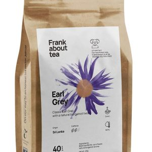
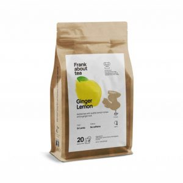

A classic method of brewing coffee using a coffee maker, which drips hot water through a filter filled with ground coffee beans.
P80
Espresso
A concentrated shot of coffee made by forcing pressurized hot water through finely ground coffee beans. Espresso has a strong and bold flavor.
P85
americano
A simple coffee made by adding hot water to a shot of espresso. This creates a longer, milder coffee.
P80
Iced Coffee
a classic cold coffee made by brewing coffee using hot water and then cooling it down with ice. It is usually served with milk and sugar.
P70
Cold Brew Coffee
Cold brew coffee is made by steeping coarsely ground coffee in cold water for 12-24 hours. This process results in a smooth, less acidic coffee with a sweeter flavor.
P90
Nitro Cold Brew Coffee
made by infusing cold brew coffee with nitrogen gas, resulting in a creamy, foamy texture similar to that of a beer. It has a smooth and velvety mouthfeel.
P85

Drip Coffee
Your morning grey with a twist Our own version of the classic Earl Grey, with lavender and pink pepper. Raising it from ordinary to extraordinary.
P80
Espresso
Nomad is a 2 origin Colombia and Guatemala Blend. An easy drinking medium bodied and balanced coffee.
P85

americano
An Earl Gray-esque morning tea with a twist. Our own version of the classic Earl Gray, with natural bergamot.


.jpg)